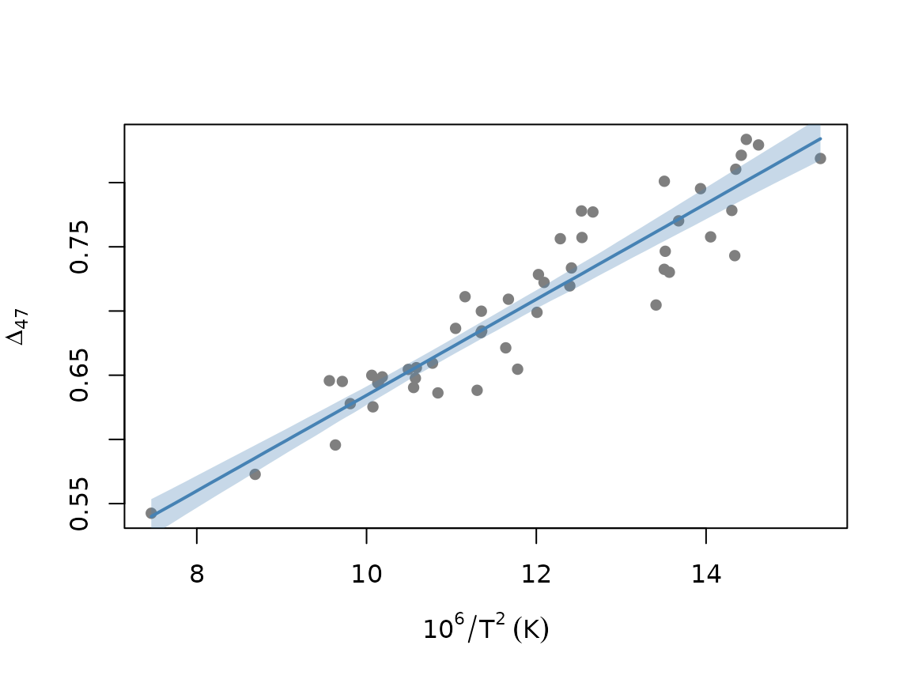

This vignette compares the four frequentist regression models in
bayclumpr. It also shows how to plot a calibration and
reconstruct temperatures. If you’re new to the package, start with
vignette("bayclumpr", package = "bayclumpr").
The four models
The models differ in which measurement errors they account for.
| Function | Model | Errors in Temperature
|
Errors in D47
|
|---|---|---|---|
cal.ols() |
Ordinary least squares | No | No |
cal.wols() |
Weighted least squares | No | No |
cal.deming() |
Deming regression (deming package) |
Yes | Yes |
cal.york() |
York regression (IsoplotR package) |
Yes | Yes |
The weights in cal.wols() don’t come from the reported
errors. They come from a regression of the absolute residuals on the
fitted values, so observations in regions with more scatter get less
weight. cal.deming() and cal.york() use
TempError and D47error for each
observation.
All four functions use bootstrapping. Each replicate resamples the
calibration dataset with replacement and fits the model again. The
result has one row per replicate, with the intercept
(alpha) and slope (beta). We recommend at
least 1,000 replicates.
Fitting the models
We simulate 50 observations under the intermediate error scenario.
The true values are alpha = 0.268 and beta =
0.0369.
set.seed(3)
ds <- cal.dataset(error = "S2", nobs = 50)
fits <- list(
OLS = cal.ols(data = ds, replicates = 1000),
WOLS = cal.wols(data = ds, replicates = 1000),
Deming = cal.deming(data = ds, replicates = 1000),
York = cal.york(data = ds, replicates = 1000)
)We summarize each model with the mean and 95% interval of the slope:
t(sapply(fits, function(f) {
c(alpha = mean(f$alpha),
beta = mean(f$beta),
beta_lower = quantile(f$beta, 0.025, names = FALSE),
beta_upper = quantile(f$beta, 0.975, names = FALSE))
}))
#> alpha beta beta_lower beta_upper
#> OLS 0.2693856 0.03662650 0.03298794 0.04025965
#> WOLS 0.2642561 0.03705489 0.03369426 0.04073164
#> Deming 0.2612304 0.03731127 0.03346909 0.04101653
#> York 0.2606095 0.03736634 0.03372884 0.04112536Plotting a calibration
cal.ci() takes the table of alpha and
beta and returns the median line and its 95% interval over
a range of temperatures. Here we plot the York calibration:
ci <- cal.ci(fits$York, from = min(ds$Temperature), to = max(ds$Temperature))[[1]]
plot(D47 ~ Temperature, data = ds, pch = 16, col = "grey50",
xlab = expression(10^6 / T^2 ~ (K)), ylab = expression(Delta[47]))
polygon(c(ci$x, rev(ci$x)), c(ci$ci_lower_est, rev(ci$ci_upper_est)),
col = adjustcolor("steelblue", 0.3), border = NA)
lines(ci$x, ci$median_est, col = "steelblue", lwd = 2)
Reconstructing temperatures
rec.clumped() reconstructs temperatures from any of
these tables. We create a reconstruction dataset with three D47 values,
each measured with two levels of precision:
recData <- data.frame(
Sample = paste("Sample", 1:6),
D47 = rep(c(0.6, 0.7, 0.8), 2),
D47error = rep(c(0.005, 0.02), each = 3)
)
rec.clumped(recData = recData, obCal = fits$York)
#> Sample D47 D47error meanTemp error
#> 1 Sample 1 0.6 0.005 58.660721 3.437023
#> 2 Sample 2 0.7 0.005 18.468403 2.042599
#> 3 Sample 3 0.8 0.005 -9.948346 2.118476
#> 4 Sample 4 0.6 0.020 58.660721 10.277460
#> 5 Sample 5 0.7 0.020 18.468403 6.785785
#> 6 Sample 6 0.8 0.020 -9.948346 5.125742meanTemp is the temperature (°C) predicted from the mean
slope and intercept. error is 1 SD. It combines the error
in D47 with the spread of slopes and intercepts in the
bootstrap. It doesn’t include the scatter of individual samples around
the calibration line. The Bayesian reconstructions in
vignette("bayesian", package = "bayclumpr") do include
it.
We can also reconstruct the same samples under every model:
recs <- lapply(fits, function(f) rec.clumped(recData = recData, obCal = f)$meanTemp)
cbind(recData, do.call(cbind, recs))
#> Sample D47 D47error OLS WOLS Deming York
#> 1 Sample 1 0.6 0.005 59.69100 59.06459 58.719871 58.660721
#> 2 Sample 2 0.7 0.005 18.49426 18.46315 18.459570 18.468403
#> 3 Sample 3 0.8 0.005 -10.42089 -10.15702 -9.990839 -9.948346
#> 4 Sample 4 0.6 0.020 59.69100 59.06459 58.719871 58.660721
#> 5 Sample 5 0.7 0.020 18.49426 18.46315 18.459570 18.468403
#> 6 Sample 6 0.8 0.020 -10.42089 -10.15702 -9.990839 -9.948346